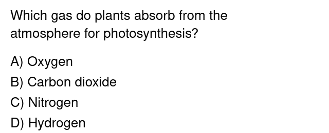

Serve this over HTTP (not file:// — extensions need the "Allow access to file URLs" toggle for that, and it's simplest to skip it):
cd ~/projects/github/repos/delphi/manual-test && python3 -m http.server 8123
Then open http://localhost:8123/.
What is 7 x 8? A) 54 B) 56 C) 58 D) 64
Select the line above and try Explain with Delphi / Ctrl+Shift+E. It should also get an auto-detect "Explain" button when auto-detect is on.
Which planet is known as the Red Planet?
The question and choices are in separate elements, wrapped in one <div> — checks that auto-detect flags the wrapper, not each piece separately.

Right-click → Capture region with Delphi (or Ctrl+Shift+D), then drag a box around the image above. There's no selectable text here, so this only works via region capture.
Isn't the weather nice today? It's been sunny all week.
A) apples B) oranges C) bananas are common fruits sold at the market.